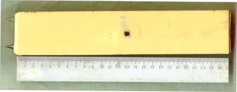
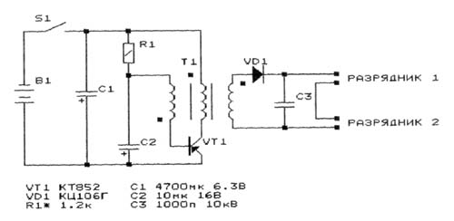
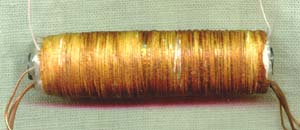
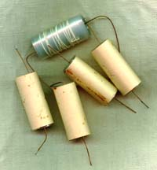
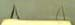
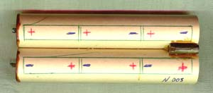

Электрошоковое устройство
Электроискровый разрядник
Электрозажигалка для газовой плиты

Устройство разработано на основе простого маломощного высоковольтного преобразователя с выходным напряжением около 10000 вольт и малым выходным током. Может быть использовано в качестве средства самообороны, а также для поджига газа в газовых плитах и проведения опытов с электрическим разрядом. Отличается простотой конструкции и эксплуатации.
Технические данные:
Исходные данные при разработке:
Мощность выходного сигнала переносного устройства с автономным питанием лимитирована свойствами источника энергии. Энергоемкость доступных источников питания, возможных к применению в малогабаритных устройствах, невелика, поэтому средняя выходная мощность не превышает порядка единиц ватт. Вывод: применение маломощных электроразрядников в качестве средства самообороны может базироваться в основном на психологическом воздействии. Важным условием является неподготовленность нападающего в отношении знания свойств электрического разряда. Физическое воздействие, как правило, невелико. При наличии достаточно высокого уровня агрессии эффект воздействия тока может быть обратным желаемому. Поэтому было решено ограничиться сравнительно невысоким выходным напряжением, которое бы позволяло получать электрический разряд в воздухе, сопровождающийся световыми и звуковыми эффектами. Применение некоторых дополнительных мер позволило бы также усилить действие разряда при непосредственном касании тела нападающего разрядником, если психологического воздействия оказалось недостаточно, и ситуация продолжала развиваться неблагоприятно. Кроме того, достаточно большие габариты и значительный вес позволяли бы использовать устройство для механического воздействия на нападающего. Дополнительная полезная функция - возможность использования устройства в качестве электрозажигалки для газовой плиты. Эта функция может играть роль маскирующей (надпись на корпусе "Электрозажигалка для газовой плиты").
Принципиальная схема:
На рис. 1 представлена электрическая принципиальная схема высоковольтного преобразователя напряжения для устройства.

Рис. 1. Схема принципиальная высоковольтного преобразователя напряжения.
Основой схемы является блокинг-генератор на транзисторе VT1, режим работы которого определяется элементами R1, C2. Буферный конденсатор C1 обеспечивает равномерность нагрузки батареи гальванических элементов B1 и уменьшает пульсации питающего напряжения. Трансформатор T1 блокинг-генератора имеет три обмотки: коллекторную - для накопления энергии и передачи ее в другие обмотки, базовую - для обратной связи, высоковольтную - для питания выходного каскада. Напряжение с высоковольтной обмотки трансформатора подается через выпрямительный диод VD1 на накопитель энергии C3, а с него - на разнесенные в пространстве разрядники. Такая конструкция разрядников позволяет повысить уровень физического воздействия. Для включения-выключения используется микровыключатель МП-3-1 или аналогичный (S1).
Конструкция:
Трансформатор:
Трансформатор преобразователя намотан на бумажном каркасе - трубке с внутренним
диаметром 8 мм и длиной 70 мм. Базовая и коллекторная обмотки (по 10 витков)
наматываются одновременно сложенным вчетверо медным монтажным проводом диаметром
0.33 мм в ПВХ изоляции (один провод используется для базовой обмотки, остальные
три, соединенные параллельно, для коллекторной). Сверху прокладывается слой
полиэтиленовой изоляции толщиной около 100 мкм. Поверх него наматывается
высоковольтная обмотка. Она содержит 17000 витков ПЭВ-2 0.063 мм, намотанных
слоями по 1000 витков, между которыми проложены слои полиэтиленовой изоляции
толщиной около 25 мкм каждый. Выводы высоковольтной обмотки выполнены монтажным
проводом с фторопластовой изоляцией. Снаружи обмотка покрыта слоем
полиэтиленовой изоляции толщиной 100 мкм и обмотана хлопчатобумажной нитью.
Внутрь каркаса вставляется отрезок ферритового стержня (400НН) диаметром 8 мм и
длиной 70 мм. Внешний вид трансформатора показан на рис. 2.

Рис. 2. Трансформатор высоковольтного преобразователя. Диаметр ~ 20 мм, длина 70 мм.
Высоковольтный конденсатор:
Высоковольтные конденсаторы изготовлены с использованием в качестве обкладок
двух слоев алюминиевой фольги толщиной 35 мкм длиной 300 мм, разделенных
изолирующими прокладками из полиэтилена толщиной 200 мкм. Слои склеиваются клеем
БФ-2 и сворачиваются в рулон, который обклеивается слоем бумаги. Медные выводы
крепятся к фольге методом обжима (при высоком напряжении качество соединения не
играет большой роли). Емкость одного конденсатора около 1000 пФ (см. рис. 3).
Расчетная формула для емкости конденсатора: C = (e0eS)/d, где S - площадь обкладки, d
- толщина изолирующей прокладки, e - относительная диэлектрическая
проницаемость материала прокладки,
e0 ~ 8.85
∙ 10-12 Ф/м - электрическая постоянная.

Рис. 3. Высоковольтные конденсаторы 1000 пФ 10 кВ. Диаметр ~ 17 мм, длина (без выводов) ~ 40 мм.
Разрядники :
Для повышения уровня физического воздействия использована пара разрядников,
разнесенных на максимально возможное расстояние (см. рис. 4). К боковым
контактам подводится высокое напряжение. Средние контакты соединены между собой.
В воздухе происходит двойной разряд между контактами, расположенными рядом друг
с другом. При приближении к токопроводящему объекту разряд происходит между
боковыми контактами и объектом.

Рис. 4. Внешний вид разрядников.
Для размещения гальванических элементов предназначены контейнеры (см. рис. 5), изготовленные из тонкого картона.

Рис. 5. Контейнер для гальванических элементов (6 шт. А332). Размеры: 45 х 22.5 х 120 мм3.
Монтаж электронной схемы выполнен "на весу". Все устройство в сборе помещается в форму из оргстекла (полиметилметакрилат) и заливается эпоксидной смолой КДА (электрическая прочность ~ 11 ... 15 кВ/мм). В качестве наполнителя используется карбонат кальция (зубной порошок) с добавлением обрезков капроновой кордной нити для повышения механической прочности. Торец устройства со стороны установки гальванических элементов закрывается крышкой из фольгированного стеклотекстолита с замыкающим контактом. К этому же торцу при необходимости может быть прикреплен темляк. Для контроля выходного напряжения может использоваться киловольтметр [1].
Ссылки:
15.02.2004
27.01.2006
20.06.2010
15.02.2018
Альтернативные источники
энергии
Компьютеры и
Интернет
Магнитные поля
Механотронные системы
Перспективные
разработки
Электроника и технология